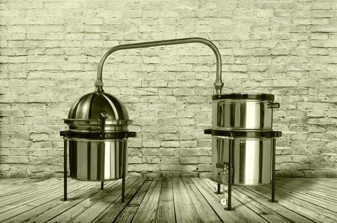

Kako se proizvodi rakija?
Rakija se može proizvoditi od svih voćnih vrsta koje sadrže šećer iz kojeg u toku alkoholne fermentacije nastaje alkohol. Najpogodnije voćne vreste za proizvodnju rakije su jabučaste (jabuke i kruške) i koštičave vrste (šljive, trešnje, višnje, kajsije i breskve). U nekim zemljama rakija se proizvodi i od bobičastog voća (maline, ribizle, kupine itd.). Lozovača i komovica se proizvode od prevrelog kljuka grožđa ili komine od grožđa koje zaostaju u proizvodnji vina.
Voće za proizvodnju rakije se bere u punoj fiziološkoj zrelosti jer u tom stadijumu voće sadrži maksimalnu količinu šećera i najizraženiju sortnu aromu koja je veoma važna za svaku voćnu rakiju. Za proizvodnju voćnih rakija uglavnom se koristi voće koje nije prikladno za duže čuvanje i skladištenje, prezrelo, oštećeno i manje kvalitetno.
Od takvog voća može se dobiti još uvek dobra rakija. Jako trulo i plesnivo voće znatno umanjuje kvalitet rakije jer dolazi do prelaska stranih mirisa u rakiju za vreme destilacije. Rakija proizvedena od nedozrelog voća je drugorazrednog kvaliteta posebno u pogledu arome.Za proizvodnju vrhunske rakije potrebno je uzimati samo fiziološki zrelo, neoštećeno i dobro čuvano voće.
Prezrelo, oštećeno i plesnivo voće sadrži manje šećera i ima lošu aromu, pošto prezrelo voće brzo gubi aromatične komponente. Izuzetak od ovog generalnog pravila čine šljive i kruške viljamovke čiji prezreli plodovi sadrže više aromatičnih materija i daju kvalitetniju rakiju.
Za proizvodnju rakije se koriste plodovi naniže klase, koji se ne mogu prodavati u konzumne svrhe. Opalo voće je potrebno što pre pokupiti zbog prljanja i oštećivanja od strane štetočina. Nije dobro da svo voće za rakiju bude pokupljeno sa poda. Preporuka se da odnos opalog i branog voća bude 60:40 u korist branog voća jer se branjem dobija kvalitetnija sirovinu za preradu.
U kominu je poželjno dodati i deo bolje klase plodova jer samo kvalitetna sirovina omogućava dobijanje kvalitetne voćne rakije. Voće je na početku prerade potrebno oprati jakim mlazom vode. Pranjem se sa voća uklanjaju mehaničke nečistoće i redukuje broj mikroorganizama sa površine plodova.
Mehaničke nečistoće mogu dati strani miris rakiji, a bakterije i divlji kvasci mogu ometati vrenje voćnog kljuka ili čak izazvati kvarenje kljuka. Usitnjavanje voća je obavezna mehanička radnja. Usitnjeno voće lakše otpušta arome i šećer pa komina brže fermentiše uz veći randman alkohola. Voće se može usitniti sa muljačama sa valjcima, mlinovima ili ručno. Jezgrasto i koštičavo voće usitnjava se u mlinovima za voće, a bobičasto može i ručno. .
Natrulo i meko voće ne treba muljati, jer se ono potpuno izgnječi pod dejstvom sopstvene težine prilikom stavljanja u sud za vrenje.Pri usitnjavanju koštičavog voća najbolje je ukloniti košticu. Treba paziti da se koštice ne lome jer polomljene koštice utiču na stvaranje cijanovodične kiseline u destilatu. Komini od šljive može se dodati malo koštica u kazan pre početka destilacije da bi se dobila karakteristična aroma destilata. Koštice treba potpuno ukloniti iz komine bresaka i trešanja i žutih šljiva.Peteljke voća moraju se ukloniti jer destilatu daju strani i nepoželjan ukus.
Dobijena komina puni se u posude za fermentaciju do oko 75% njihove zapremine. Prazan prostor u posudama se ostavlja da komina ne pokipi u toku vrenja. Na početku vrenja kljuk je poželjno promešati svakog dana. Ovim se postiže ravnomerno vrenje u celoj masi, a istovremeno se sprečava razvijanje štetnih bakterija sirćetne kiseline koje se mogu razviti na površini kljuka i ukiseliti ga.Alkoholna fermentacija predstavlja proces transformacije šećera, aktivnošću kvasaca, u alkohole i ugljen dioksid. Ovaj proces može se prikazati sledećom jednačinom:C6H12O6 → 2C2H5OH + 2CO2 + 117,8 kJPri ovom procesu nastaje mnogo različitih međuproizvoda.